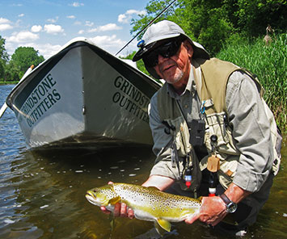
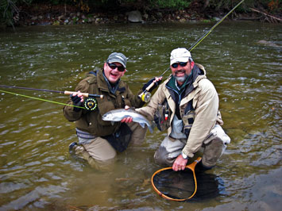

Ontario Trout
South central Ontario is a geographical area approximately half the size of Pennsylvania. This region of Ontario is bordered by three of the Great Lakes: Lake Huron and Georgian Bay to the west and north, with Lake Erie and Lake Ontario making up the southern boundaries. At the Canada/United States border between Lake Ontario and Lake Erie is the beginning of the Niagara escarpment. This geological formation is a limestone bedrock area that reaches elevations of 1000 feet and runs 725 km from Lake Ontario (near Niagara Falls) to the tip of the Bruce peninsula at Tobermory (between Lake Huron and Georgian Bay). The escarpment contains the headwaters for most of the great cold-water trout rivers and streams in this region. The major rivers that flow to the Great Lakes are made up of these cold water tributaries and for local anglers, it is trout heaven.
An Abundance of Streams and Rivers Holding Trout
There are thousands of miles of freestone and limestone streams and rivers with good populations of brook trout, brown trout and rainbow trout. The substrate that makes up the river beds are natural hatcheries for all these trout species as well as the insect populations of each river. The Niagara escarpment provides each stream with areas of eroded rock that soon become granular in size; this provides the fish with the natural spawning habitat required for wild populations of trout in our rivers. The majority of rivers in south central Ontario run through farm country with a few flowing into the urban areas. All of them are within a 2-3 hour drive from Toronto or the bordering U.S. States. A great fly-fishing excursion can be had anywhere in south central Ontario. Whether you enjoy the solitude of working dry flies for big rainbows and browns, splashing streamers for exciting action, or working a small stream for precious brook trout, you can experience all of it here.
Book a Guided Fly Fishing Trip with Grindstone Angling
Contact us today to inquire about a guided trip on any of the great rivers in Ontario. You can call the shop at 905-689-0880 or using our guide trip inquiry form below. You can find out more about our services on our Ontario Fishing Guide Service page.